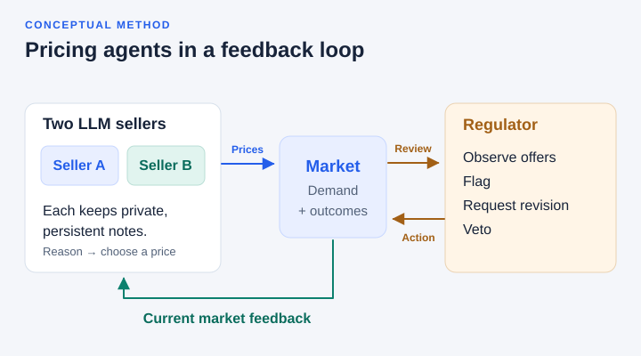

Agents & marketsOngoing


Open diagramLLM Pricing Agents in Dynamic Markets
How do pricing strategies evolve when language-model agents compete under changing demand and regulatory oversight? I study the roles of market history, persistent memory and repeated interaction.